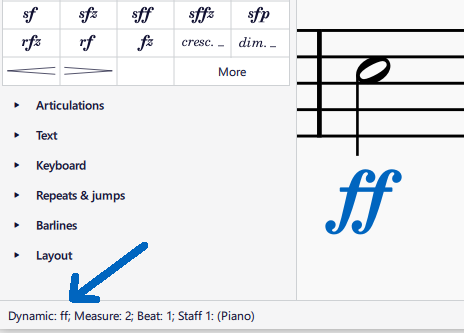
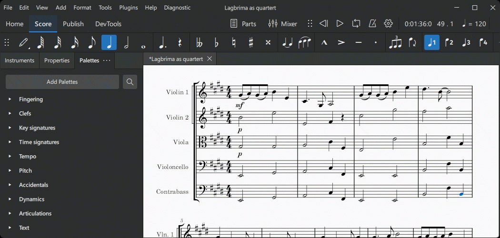
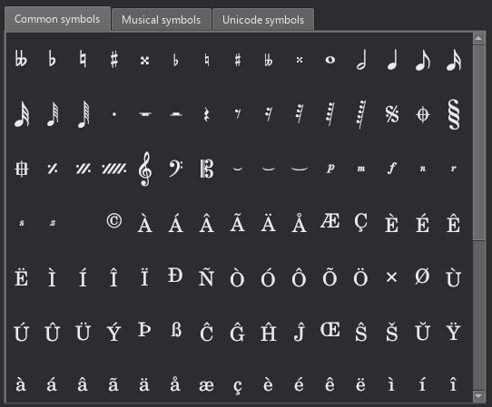

文本的输入与编辑
概述
Musescore 具有不同的文本编辑功能。本章以及手册"文本"部分下的其他章节重点介绍 Musescore 文本对象，即可放置在乐谱上的独立对象，以及包含它的对象。还有一些乐谱设置会自动将文本添加到页面上。
文本类型
MuseScore 文本对象
MuseScore 文本对象是乐谱上的一个对象，包含可以使用（在）计算机键盘输入和删除的单个字符。它通常附着在音符或休止符上，其中一些附着在另一个对象上。
不同类型的文本对象不可互换。它们具有不同的属性字段，会影响 Musescore 的功能。例如，样式化为节拍器标记的谱表文本对象永远无法配置为在 Musescore 内部更改播放速度。速度对象应用于在 Musescore 内部更改播放速度。
要检查对象类型，请选中乐谱上的一个对象，其类型会显示在状态栏上。\

| 文本对象类型 | 用途 |
|---|---|
| 谱表文本 | 用于单个 MuseScore 乐器的通用文本。可配置为应用摇摆播放或声音标记。请参阅设置乐谱和谱表文本、系统文本和表情文本章节。 |
| 系统文本 | 与谱表文本类似，但适用于系统（页面排版概念）中的所有乐器。请参阅页面排版概念和谱表文本、系统文本和表情文本章节。 |
| 表情文本 | 文本面板中的表情项。Musescore 4 中引入的新类型。截至 Musescore 4.2，不影响 Musescore 播放。请参阅谱表文本、系统文本和表情文本章节。 |
| 乐器更改 | 文本面板中的更改乐器项。在锚定音符或休止符之后更改 Musescore 乐器。请参阅设置乐谱和乐谱中途乐器更改章节。 |
| 力度 | 例如 p 和 mf，是影响 Musescore 播放力度的文本。请参阅力度章节。 |
| 力度变化线 | 例如 crese. 和 dim.，是影响 Musescore 播放力度的文本线。请参阅力度变化线章节。 |
| 演奏技法注释 | 文本面板中的 legato.、pizz. 等项目。【此信息正在进行中，软件功能正在积极开发中，请参阅并更新谱表文本、系统文本和表情文本、力度、混音器、术语表和演奏记号章节】 |
| 速度 | 数字节拍器标记、文字方向。一种指定 Musescore 播放速度的文本类型。请参阅速度标记章节。 |
| 渐变速 | 例如 accel.。Musescore 4 中引入的新文本线类型，影响 Musescore 播放速度。请参阅速度标记章节。 |
| 速度面板中的 Swing 和 Straight 项 | 一种预配置的系统文本。请参阅摇摆播放和谱表文本、系统文本和表情文本章节。 |
| 歌词 | Ctrl+V 键盘快捷键会拆分剪贴板中存储的单词，粘贴后方便地跳到下一个锚点。请参阅歌词章节。 |
| 跳转 | 例如 反复与跳转面板中的 "D.C."（Da Capo）、"D.S. al Coda" 等。请参阅跳转和标记章节。 |
| 标记 | 反复与跳转面板中的变调夹符号、Segno 符号、"Fine"、"To Coda" 等。请参阅跳转和标记章节。 |
| 排练标记 | 文本面板中带方框的 B1 项。便于排练、将乐谱划分为段落、为乐段添加书签等。请参阅排练标记章节。 |
| 和弦符号 | 具有播放功能，音符会自动确定。请参阅和弦符号章节。 |
| 纳什维尔数字 | 具有播放功能，与和弦符号类似。请参阅和弦符号：NNS章节。 |
| 罗马数字 | 无播放功能。请参阅和弦符号：RNA章节。 |
| 数字低音 | 一种古键盘记谱法。无播放功能。请参阅数字低音章节。 |
| 鼓槌法 | 附着在（鼓）音符上的字母（L 和 R），表示使用哪只手或哪只脚。请参阅鼓槌法章节。 |
| 指法 | 附着在音符上的数字或字母，表示使用哪些手指。请参阅指法章节。 |
| 标题、副标题、作曲者、词作者和文本（文本块类型） | 它们是设计用于添加到框架中的文本类型。请参阅文本块和框架章节。它们不是页眉和页脚中使用的占位文本，请参阅"乐谱设置"部分。 |
| 文本线，包括反复跳房子、踏板等类型 | 反复跳房子等在反复与跳转面板中。踏板在键盘面板中。八度线（8--、8ve、8va、15--）等在音高面板中。吉他和弦横按线等。请参阅其它线条章节。 |
乐谱设置
MuseScore 乐器的长名和短名（请参阅设置乐谱章节）会自动添加到每个系统中谱表的左侧（页面排版概念，请参阅页面排版概念章节）。名称可以直接在乐谱上使用文本编辑模式更改，或使用谱表/分谱属性窗口更改，请参阅谱表/分谱属性章节。默认情况下，它们只在有多个乐器时才添加。要更改此默认行为，请更改 格式→样式→乐谱 下的设置。
小节编号可以自动添加。在 格式→样式→小节编号 中配置，请参阅小节编号章节。
Musescore 的页眉和页脚功能会自动将文本添加到每个页面上。在 格式→样式→页眉和页脚 中配置。占位文本（特殊符号）可用于添加诸如当前页码、版权声明等信息。占位文本还用于将元数据标签（乐谱文件的数字数据）动态添加到乐谱上。请参阅页眉和页脚章节。
将文本对象添加到乐谱
不同类型的文本对象不可互换，在添加之前先确定合适的对象类型。 请使用 "MuseScore 文本对象"部分下的图表。对于一般的制谱或视觉显示目的，建议使用谱表文本或系统文本。
以下说明如何将文本添加到音符、休止符或框架外的有效锚点。将文本添加到框架的方法在文本块章节中介绍。
从面板添加
要从面板向乐谱添加文本元素，可以选中一个或多个音符/休止符并单击所需的面板项；或将文本从面板拖到音符/休止符上。例如：

从菜单添加
如果文本对象与谱表关联，你可以通过选中一个音符，然后从 添加→文本 中选择文本选项来添加它。
使用键盘快捷键
许多文本类型可以使用键盘快捷键输入。快捷键显示在 添加→文本 中各项的右侧。
要创建文本对象，请选中一个音符，然后输入所需的快捷键。
删除乐谱上的文本对象
要编辑由乐谱设置自动添加的文本，请参阅"乐谱设置"部分。
要删除乐谱上的对象，请选中这些对象，然后按 Backspace 或 Del。
编辑文本对象内容
要编辑由乐谱设置自动添加的文本，请参阅"乐谱设置"部分。
文本和文本线对象根据对象类型使用两种不同的方法进行编辑：
- 直接在文本编辑模式中编辑，如下所述；或
- 在属性面板中编辑属性，请参阅该文本对象的具体章节。
要进入文本编辑模式，请使用以下方法之一：
- 双击文本对象，或
- 选中文本对象并按 Return，或
- 选中文本对象并按 F2 或 Alt+Shift+E，或
- 右键单击文本对象并选择"编辑元素"。
要退出文本编辑模式，请按 Esc 或单击编辑区域外的乐谱部分。
文本编辑模式下可用的键盘快捷键
文本编辑模式下提供以下键盘快捷键：
| 功能 | Windows 和 Linux | Mac |
|---|---|---|
| 粗体（切换） | Ctrl+B | Cmd+B |
| 斜体（切换） | Ctrl+I | Cmd+I |
| 下划线（切换） | Ctrl+U | Cmd+U |
| 移动光标 | (Ctrl+) Left, Right, Up, Down, Home, End | (Alt+) Left, Right, Up, Down |
| 删除光标左侧的字符 | Backspace | Backspace |
| 删除光标右侧的字符 | Del | Del 或 Fn+Backspace |
| 开始新行 | Return | Return |
| 插入特殊字符（见下文） | Shift+F2 | Shift+F2 |
特殊字符
标准键盘上没有的字符可以使用特殊字符窗口访问。

要打开特殊字符窗口，在文本编辑模式下（请参阅"编辑文本对象内容"部分），按 Shift+F2；或单击属性面板文本部分中的 插入特殊字符。
该对话框分为 3 个选项卡：常用符号、音乐符号和 Unicode 符号。音乐和 Unicode 选项卡又进一步细分为按字母顺序排列的类别。最好使用常用符号选项卡中的项目，因为它们是功能性的，请参阅 Musescore 3 手册字体章节。
在特殊字符对话框中单击某个项目会立即将其添加到光标所在位置的文本中。可以应用多个项目而无需关闭对话框，用户甚至可以在对话框打开的情况下继续正常输入、删除字符、输入数字字符代码等。
在文本编辑模式下，以下键盘快捷键会将功能性版本的特殊字符（尽可能）添加到当前文本对象中，请参阅 Musescore 3 手册字体章节。
| 字符 | Windows 和 Linux | Mac | 备注 |
|---|---|---|---|
| 升号 ♯ | Ctrl+Shift+# | Cmd+Shift+# | 在某些键盘布局上可能无效 |
| 降号 ♭ | Ctrl+Shift+B | Cmd+Shift+B | |
| 还原号 ♮ | Ctrl+Shift+H | Cmd+Shift+H | |
| Piano p | Ctrl+Shift+P | Cmd+Shift+P | |
| Forte f | Ctrl+Shift+F | Cmd+Shift+F | |
| Mezzo m | Ctrl+Shift+M | Cmd+Shift+M | |
| Rinforzando r | Ctrl+Shift+R | Cmd+Shift+R | |
| Sforzando s | Ctrl+Shift+S | Cmd+Shift+S | |
| Niente n | Ctrl+Shift+N | Cmd+Shift+N | |
| Z z | Ctrl+Shift+Z | Cmd+Shift+Z | |
| 省音号 ‿ | Ctrl+Alt+- | Cmd+Alt+- |
引号
引号默认使用弯引号变体。与许多文字处理器类似，输入引号后立即使用撤销可以恢复为直引号。